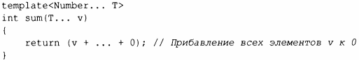
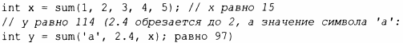
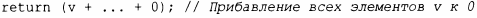
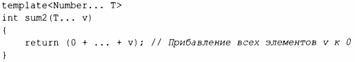
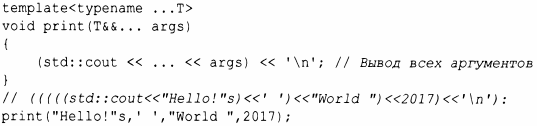
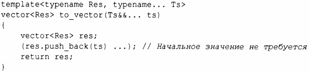
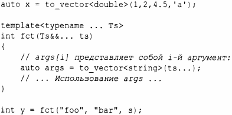

⇐7.4 Вариативные шаблоны 7.4.2 Передача аргументов⇒
Чтобы упростить реализацию простых вариативных шаблонов, С++ 17 предлагает ограниченную форму итерации по элементам пакета параметров. Например:
Здесь sum() может принимать любое количество элементов любого типа. В предположении, что sum() действительно суммирует свои аргументы, мы получаем
Тело sum использует выражение свертки:
Здесь (v+...+О) означает прибавление всех элементов v к начальному значению О. Первым прибавляется крайний справа аргумент (имеющий наивысший индекс): (v[О] + (v[1] + (v[2] + (v[3] + (v[4] + О))))). То есть суммирование начинается справа, где находится О. Такое действие называется правой сверткой (right fold). В качестве альтернативы мы можем использовать левую свертку (left fold):
Теперь первым прибавляется аргумент, крайний слева (с наименьшим индексом): (((((O + v[О]) + v[1]) + v[2]) + v[3]) + v[4]). То есть суммирование начинается слева, где находится О.
Свертка (fold) представляет собой очень мощную абстракцию, очевидным образом связанную с алгоритмом accumulate () стандартной библиотеки, со множеством имен в разных языках и сообществах. В С++ выражения свертки в настоящее время ограничены упрощением реализации вариативных шаблонов. Свертка не обязана выполнять только числовые вычисления. Рассмотрим знаменитый пример:
Многие сценарии просто включают набор значений, которые могут быть преобразованы в общий тип. В таких случаях простое копирование аргументов в вектор или желаемый тип часто упрощает дальнейшее использование:
Мы можем использовать to_vector следующим образом:
